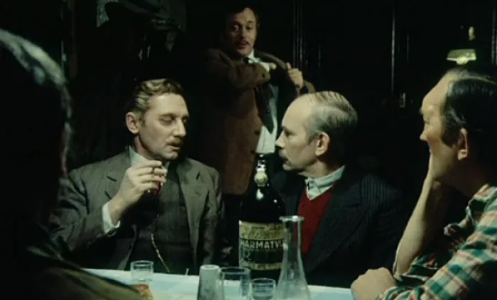

Az ötödik pecsét |
|  Rendező
Főszereplők
Miről szól? Baráti asztaltársaság beszélget egy kocsmában. Kint dúl a nyilasterror, közben az oroszok már bombázzák Budapestet, de Király, a sznob könyvügynök, Kovács, a hívő asztalos, Béla, a pragmatikus kocsmáros, és a cinikusnak tűnő Gyuricza a marhaszegy elkészítéséről és a fasizmus igazságtalanságairól beszélget. Másnap maguk is súlyos etikai döntés elé kerülnek: behódolnak vagy ellenállnak a hatalomnak. Mitől különleges? Az ötödik pecsét kivételes drámai erővel megszólaló erkölcsi példázat, amelyben a szereplőknek aközött kell választaniuk, hogy az alattvalóikat lelkifurdalás nélkül elnyomó zsarnokok, azaz Tomóceusz Katatikik, vagy a szenvedést méltósággal viselő szolgák, azaz Gyugyuk lennének, akiknek tiszta a lelkiismeretük, mert nem ők követték el ezeket a bűnöket. Az ötödik pecsét arra kérdez rá, hogy a kisemberek, akik nem a rendszerrel szemben fellázadó hősnek születtek, csak megpróbálják csendben túlélni az elnyomást, meg tudják-e őrizni az erkölcsi tartásukat, ha az életük a tét. Fábri Zoltán válasza optimista: még azok sem képesek megalkudni, akik azt hitték, mindenképp az életet választanák. Fábri a Szindbád-féle időrendbontásos stílus jegyében igyekezett dinamizálni a szűk terekhez kötött, párbeszédekre épülő filmet, amikor a könyvárus képzeletében felbukkanó Hieronymus Bosch-album képeit villanásszerűen bevágta a történet szövetébe. A szürreális hatású képek a háborús világégéssel és a diktatúrában fellépő erkölcsi végítélettel állíthatók párhuzamba, de hasonlóan elemeltek a filmvégi bombázás képsorai, amikor a ferencvárosi bérházakkal együtt mintha Gyuricza világa is összeomlana. Fábri ezzel arra utalhat, hogy bár felmenthető a zsidó gyerekeket bújtató Gyuricza döntése, ő is meghalt bizonyos értelemben azzal, hogy életben marad. Hogyan készült? Fábri már 1963-as megjelenésekor szerette volna adaptálni Sánta Ferenc azonos című regényét, de előbb a szintén frissen megjelent és témájában aktuálisabbnak gondolt Húsz órát (1965) vitte vászonra. Az ötödik pecséthez, amely megjelenésekor tézisszerűsége és áthallásai miatt vitákat váltott ki, csak a 70-es években nyúlt vissza, amikor viszont azzal a kritikával szembesült, hogy a fasizmus természetének leleplezése már idejétmúlt vállalás. Azt persze, hogy a film (és a regény) nemcsak a fasizmusról, de örökérvényű morális dilemmái révén bármelyik diktatúráról szólhat, akkor még nem lehetett kimondani. Hol a helye a (magyar) filmtörténetben?> Fábri világéletében a kisember és az erőszakos hatalom viszonyát vizsgálta, annak a lehetőségét keresve, hogyan tudja megőrizni az átlagpolgár tartását, önbecsülését, egzisztenciáját az elnyomásban. Újra és újra elővett témájának egyik legdrámaiabb megfogalmazása Az ötödik pecsét, amit némi fenntartással fogadtak bemutatásakor, de mára elfoglalta méltó helyét a rendező olyan klasszikusai mellett, mint a Körhinta, az Isten hozta, őrnagy úr! vagy a Hannibál tanár úr. Egy emlékezetes jelenet Az ötödik pecsétet Őze Lajos és Latinovits Zoltán alakítása is halhatatlanná tette. Latinovits a civilruhás nyilastiszt szerepében magyarázza el, hogy nem az ellenállók jelentik az igazi ellenséget, hanem a békés polgárok, akiknek nem tetszik a hatalom. Őket kell megtörniük: nem kínzással, fizikai bántalmazással, hanem úgy, hogy kompromittálják őket, és így megutáltatják velük önmagukat. A 70-es években könnyű volt a fasizmusról szóló példázatot a kommunizmusra is vonatkoztatni, amely besúgórendszer kiépítésével tartotta függésben állampolgárait. https://filmarchiv.hu/hu/alapfilmek/film/az-otodik-pecset-2 |